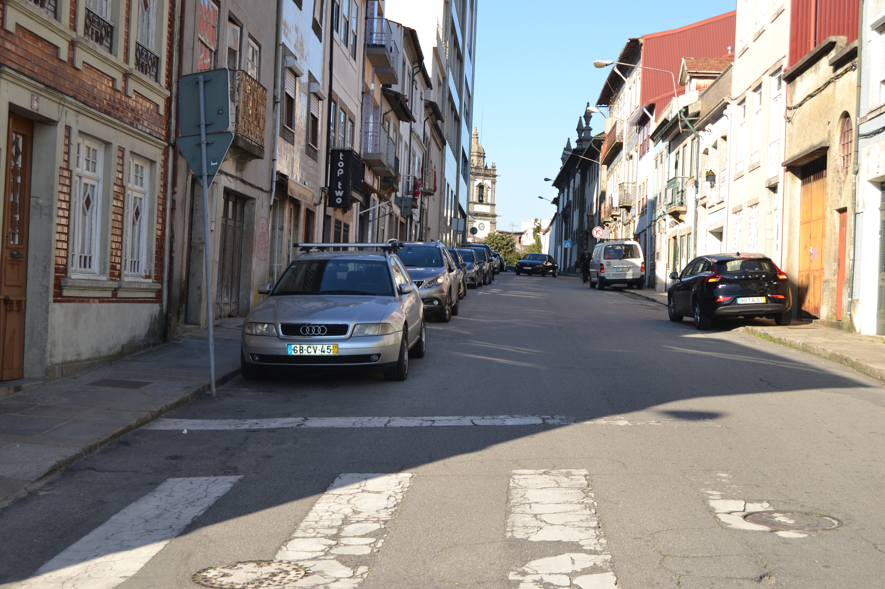
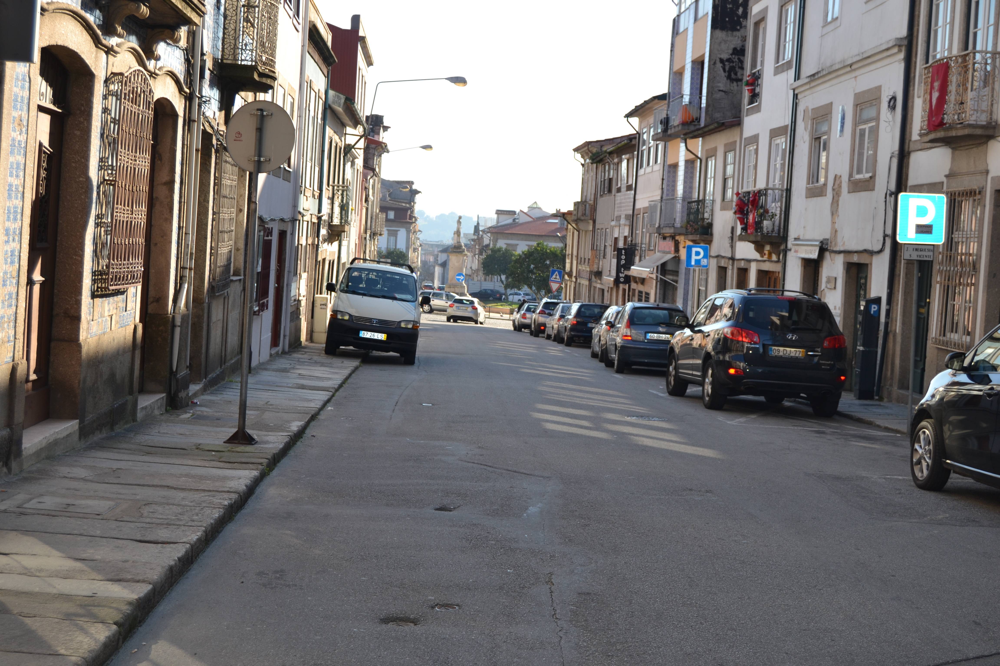
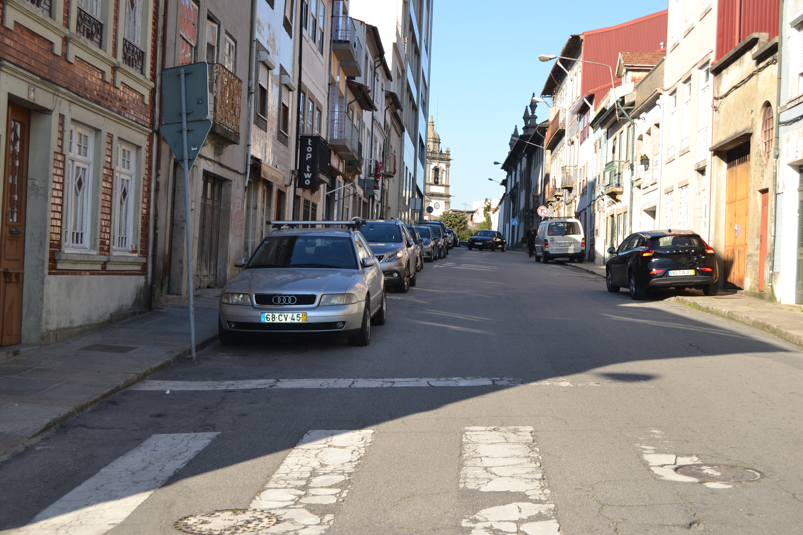
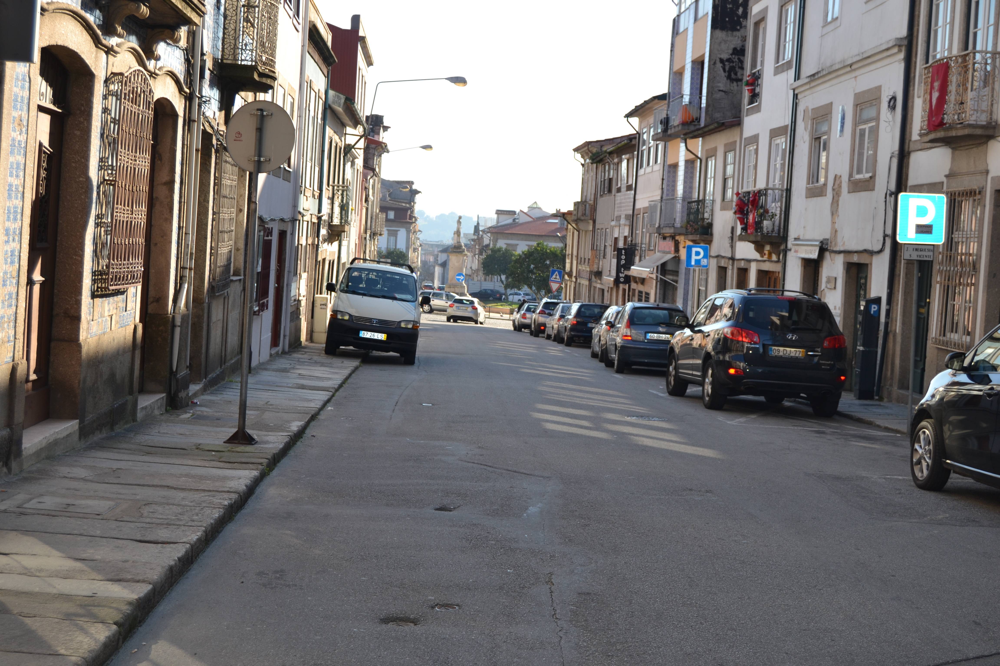
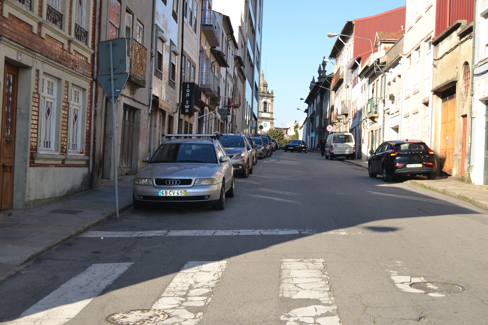
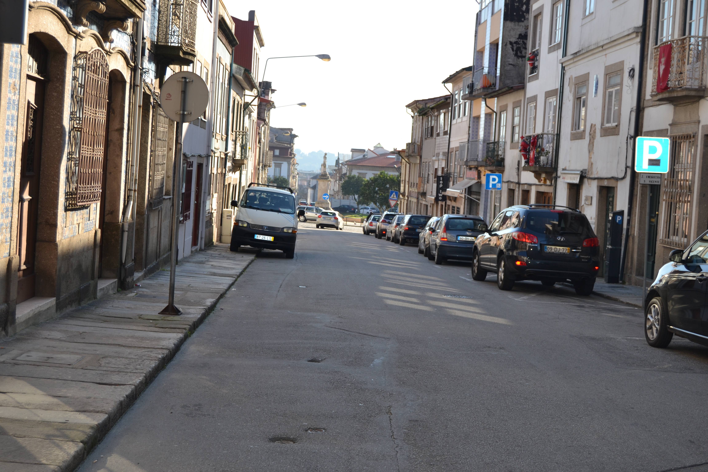
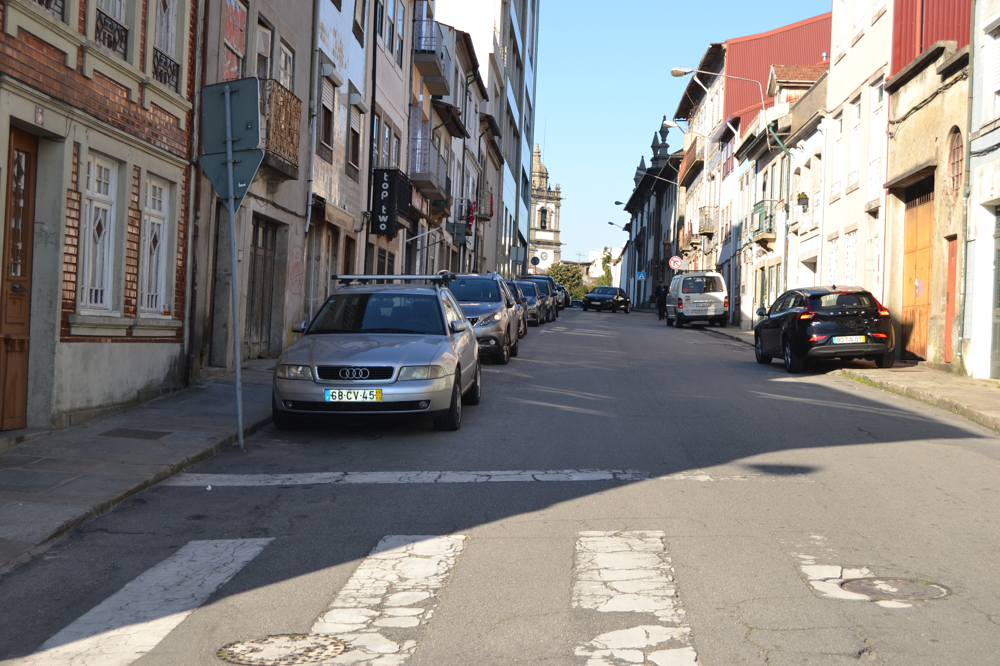
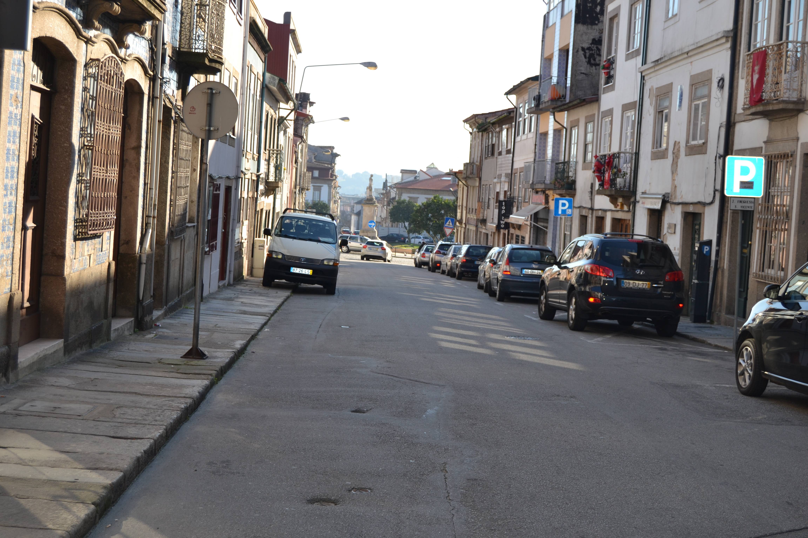

Pertencente ao complexo urbanístico do campo Novo largo das Teresinhas Cangosta rua de Santa Margarida igreja de S. Vicente capela de Guadalupe
Aberta também em 1725
Os prédios que vemos são de um piso (59%) ou dois, bastante semples, sendo a maior parte (59%) do tipo com porta ladeada de janela no piso térreo. A linha de empenas é irregular, quebrada e as janelas ou são vazadas, ou são do tipo bracarense. Também aqui não há o rigor da marcação de janelas altas e portas, da praça do Gavião
As 14 do lado Nascente e 8 do Poente são todas prazos do Cabido
Mantém a designação de rua das Oliveiras
1739
Confronta, do sul, com o chão n.° 16 da Praça do Gavião
1725
1725
1726
1725
1738
Encontram-se unidas desde o ano de 1738
Paga foro ao enfiteuta do prazo do
Chãos de casa do prazo do Rua de S. Barnabé
Chãos de casa do prazo do
O chão n.º 18 confronta, do norte, com o caminho que vai para S. Vicente
Pertencem ao cabido
1737
1738
Esteve unida, entre os anos de 1729 1738
1745
1729
1728 1725
1725
1745
Confronta, do sul, com a casa n.° 17 da Praça do Gavião
| Número de porta | Enfiteuta |
|---|---|
| 1 | D. Agostinho Maria de Barros Gavião, enfiteuta principal do prazo do casal dos Chãos ou Quinteiro. |
| 2 | D. Agostinho Maria de Barros Gavião, enfiteuta principal do prazo do casal dos Chãos ou Quinteiro. |
| 3 | D. Agostinho Maria de Barros Gavião, enfiteuta principal do prazo do casal dos Chãos ou Quinteiro. |
| 4 | D. Agostinho Maria de Barros Gavião, enfiteuta principal do prazo do casal dos Chãos ou Quinteiro. |
| 5 | D. Agostinho Maria de Barros Gavião, enfiteuta principal do prazo do casal dos Chãos ou Quinteiro. |
| 6 | D. Agostinho Maria de Barros Gavião, enfiteuta principal do prazo do casal dos Chãos ou Quinteiro. |
| 7 e 8 | D. Agostinho Maria de Barros Gavião, enfiteuta principal do prazo do casal dos Chãos ou Quinteiro. |
| 9 | D. Agostinho Maria de Barros Gavião, enfiteuta principal do prazo do casal dos Chãos ou Quinteiro. |
| 10 a 17 | D. Agostinho Maria de Barros Gavião, enfiteuta principal do prazo do casal dos Chãos ou Quinteiro. |
| 18 a 22 | D. Agostinho Maria de Barros Gavião, enfiteuta principal do prazo do casal dos Chãos ou Quinteiro. |
| 23 a 28 | D. Agostinho Maria de Barros Gavião, enfiteuta principal do prazo do casal dos Chãos ou Quinteiro. |
| 29 | D. Agostinho Maria de Barros Gavião, enfiteuta principal do prazo do casal dos Chãos ou Quinteiro. |
| 30 | D. Agostinho Maria de Barros Gavião, enfiteuta principal do prazo do casal dos Chãos ou Quinteiro. |
| 31 | D. Agostinho Maria de Barros Gavião, enfiteuta principal do prazo do casal dos Chãos ou Quinteiro. |
| 32 | D. Agostinho Maria de Barros Gavião, enfiteuta principal do prazo do casal dos Chãos ou Quinteiro. |
| 33 e 34 | D. Agostinho Maria de Barros Gavião, enfiteuta principal do prazo do casal dos Chãos ou Quinteiro. |
| 35 | D. Agostinho Maria de Barros Gavião, enfiteuta principal do prazo do casal dos Chãos ou Quinteiro. |
| 36 | D. Agostinho Maria de Barros Gavião, enfiteuta principal do prazo do casal dos Chãos ou Quinteiro. |